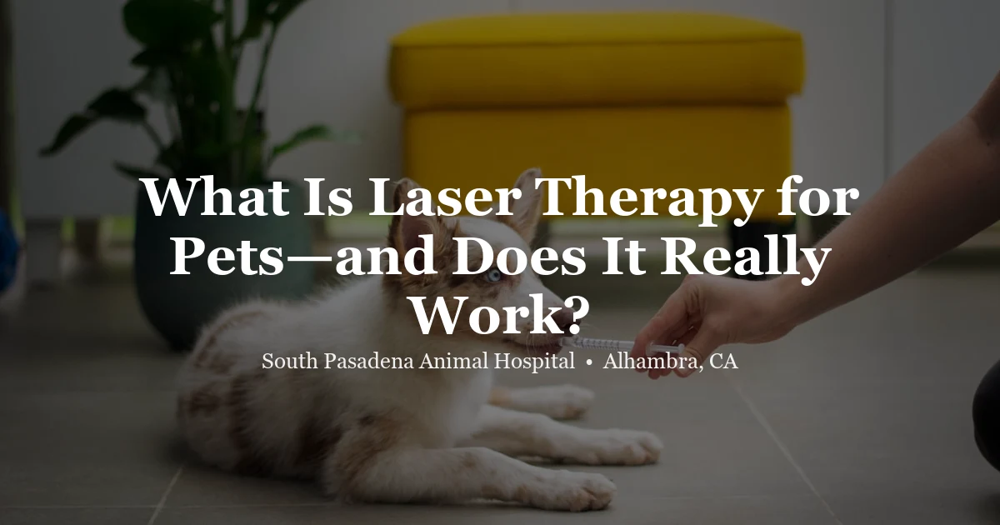

April 17, 2026 · 7 min read
What Is Laser Therapy for Pets — and Does It Really Work?

When people first hear "laser therapy" in the context of veterinary care, reactions range from intrigued to skeptical. It sounds futuristic — even gimmicky. But photobiomodulation therapy (the scientific name for what most people call cold laser or low-level laser therapy) has a growing body of peer-reviewed research behind it, and it's become a genuinely useful tool for managing pain, inflammation, and wound healing in dogs, cats, and exotic animals.
Here's a plain-English breakdown of how it works, what it's actually good for, and what you should realistically expect if your pet receives treatment at our Alhambra clinic.
How Laser Therapy Works
Veterinary laser therapy uses focused light energy — typically in the near-infrared spectrum — to penetrate skin and tissue without generating significant heat. Once inside the tissue, photons interact with cellular components called chromophores, triggering a cascade of biological responses:
- Increased ATP production — cells get an energy boost that speeds up their natural repair processes
- Reduced inflammation — pro-inflammatory mediators are downregulated, decreasing swelling and local pain
- Vasodilation — improved blood flow delivers more oxygen and nutrients to damaged tissue
- Nerve modulation — pain-transmitting nerve fibers are temporarily inhibited, providing direct pain relief
The result is a drug-free way to support healing and reduce pain at the cellular level. It's not a replacement for surgery or medication when those are genuinely needed — but it's a meaningful complement to conventional care and sometimes the best primary option for chronic conditions.
What Conditions Is It Used For?
At SPAH we use laser therapy most commonly for:
- Osteoarthritis and joint pain — one of the most well-supported applications. Dogs and cats with hip dysplasia, elbow arthritis, or spondylosis often show measurable improvement in mobility and pain scores after a course of treatments.
- Post-surgical incision healing — laser treatment over a fresh incision reduces swelling and discomfort and can speed wound closure. We commonly use it after spay and neuter procedures.
- Lick granulomas and chronic wounds — persistent skin wounds that dogs keep licking respond well to laser-assisted healing combined with behavioral management.
- Intervertebral disc disease (IVDD) — for dogs with mild to moderate disc problems, laser therapy can reduce spinal inflammation and complement physical rehabilitation.
- Dental pain and oral tissue healing — we sometimes apply laser therapy after dental procedures, particularly extractions, to support gum healing.
What a Treatment Session Looks Like
A typical session is short — usually 5 to 15 minutes depending on the area treated and the condition. Your pet lies comfortably, often without sedation. The veterinarian or technician moves a handheld probe over the treatment area. Both the pet and handler wear protective eyewear.
Most pets tolerate it easily. Some relax during treatment — the gentle warmth can feel soothing over arthritic joints. There's no noise, no discomfort from the light itself, and no recovery time afterward.
For chronic conditions like arthritis, a typical protocol starts with more frequent sessions (two to three times per week for two to three weeks) and then tapers to monthly maintenance. For post-surgical healing, one to three sessions in the days following surgery is usually sufficient.
Does It Actually Work? What the Research Says
The evidence base for photobiomodulation has grown significantly over the past decade. Studies in dogs with osteoarthritis show statistically significant improvements in ground force (how evenly dogs bear weight on painful joints) and owner-reported pain scores. Research on wound healing and post-surgical recovery in companion animals is similarly encouraging.
The honest caveat: not all laser devices are equivalent, and treatment protocols matter enormously. Underdosing produces minimal effect. A well-calibrated machine operated by trained staff following evidence-based protocols produces much better outcomes than a low-powered unit used inconsistently. When people report that "laser therapy didn't work," the most common reasons are inadequate dosing or too few sessions.
Is It Safe?
When used properly, therapeutic laser is safe for virtually all patients. The main contraindications are treating directly over active cancerous tissue and over the thyroid gland. Pregnant animals and eyes require caution. These are all standard precautions your vet will take into account before recommending treatment.
Frequently Asked Questions
How many treatments will my pet need?
It depends on the condition. Acute injuries may respond in one to three sessions. Chronic arthritis typically requires an initial series of six to eight treatments, followed by monthly maintenance. Your vet will set expectations based on your pet's specific diagnosis.
Is laser therapy painful for my pet?
No. Most pets tolerate it easily, and many relax during treatment. The device produces gentle warmth that is typically comfortable, especially over inflamed joints.
Can laser therapy be used alongside medications?
Yes — it's commonly combined with NSAIDs, joint supplements, or other treatments. The goal is often to reduce medication doses over time as the laser therapy takes effect, but your vet will guide that process.
Is it available for exotic pets?
Yes. We use laser therapy for rabbits, guinea pigs, birds, and reptiles as well as dogs and cats. Exotic pets often benefit from drug-free pain management options, since many common veterinary pain medications require careful dose adjustment in small or exotic species.
How do I know if my pet is a candidate?
The best way is a wellness exam where we assess the condition and determine whether laser therapy is appropriate. Book online or call us at (626) 441-1314.
The Bottom Line
For the right conditions — arthritis, post-surgical recovery, chronic wounds, dental healing — laser therapy is a well-supported, drug-free option that can meaningfully improve your pet's quality of life. If your pet is dealing with a painful condition and you'd like to explore whether it could help, give us a call or book an appointment at our Alhambra clinic.